Fresh student rollouts throughout training
Strong-to-weak distillation
On-Policy or Off-Policy Learning?
A Systematic Study of Distillation Dynamics
University of Cambridge · *Equal contribution
ICLR 2027
TL;DR Rollout policy does not necessarily play a central role in strong-to-weak distillation. Forward KL is remarkably robust to whether rollouts come from the teacher or student, while reverse KL favours student-generated rollouts; meanwhile, learning rate largely governs catastrophic forgetting and update sparsity. On-policy data does help in one important regime: generalisation to harder tasks.
Why Isolate the Rollout Policy?
On-policy post-training has received growing attention. Relative to off-policy learning, it has been argued to reduce catastrophic forgetting, produce substantially sparser parameter updates, and improve generalisation. But on-policy methods are also more computationally expensive: rather than reusing a fixed dataset, they require fresh generations from the model throughout training.
Most evidence comes from comparisons between supervised fine-tuning and reinforcement learning with verifiable rewards. These methods differ in several respects beyond rollout policy - including their objective, reward signal, supervision density, and optimisation procedure - making it difficult to attribute their differing behaviour to on-policy data alone.
Strong-to-weak distillation gives us precisely this control. We freeze a strong teacher, train a weaker student with the same token-level supervision and optimisation procedure, and vary whether trajectories are generated by the evolving student (OnPD) or the fixed teacher (OffPD).
only the rollout policy changes
Fixed teacher-generated rollouts
A Controlled Comparison
We distil Llama-3.1-8B teachers into Llama-3.2-1B students on three reasoning tasks spanning medical (MedReason), scientific (Science), and arithmetic (Countdown) domains, with corresponding experiments using Qwen2.5 models. We independently vary rollout policy, token-level KL direction, and learning rate, while keeping all remaining optimisation settings fixed. Each student is full-parameter fine-tuned for 150 steps with three seeds per configuration, then evaluated for held-out task accuracy, catastrophic forgetting across seven out-of-distribution benchmarks, and parameter-update sparsity.
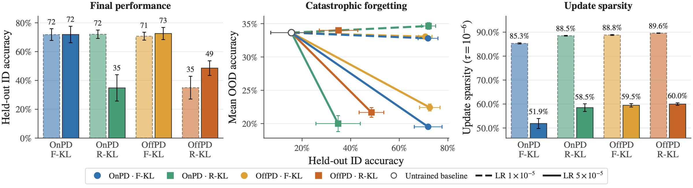
On-policy rollouts offer no consistent advantage in target-task accuracy: the best mean accuracies across the three datasets are nearly identical, reaching 72% for OnPD and 73% for OffPD. Forward KL achieves 71-73% across rollout policies and learning rates, whereas reverse KL ranges from 35% to 72%.
The same picture appears for forgetting and sparsity. At the lower learning rate, OOD accuracy changes by at most 1.3 percentage points; at the higher rate, it drops by 11.2-14.0 points. Update sparsity similarly shifts from 85.3-89.6% at the lower learning rate to 51.9-60.0% at the higher one. Differences between rollout policies are much smaller.
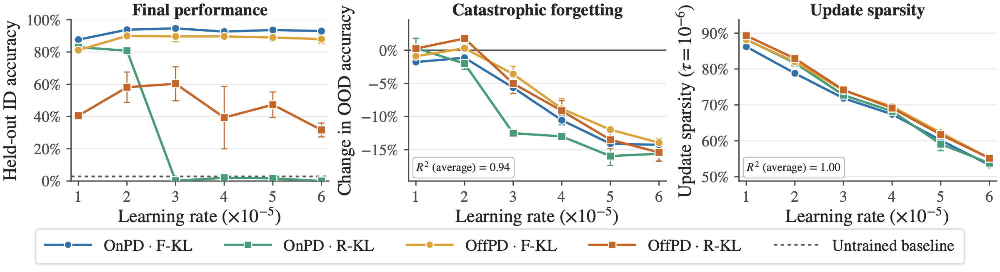
Why Forward and Reverse KL Behave Differently
To understand when rollout policy matters, we analyse the token-level gradients at a fixed prefix. The two KL directions expose a simple asymmetry.
Forward KL
Equation 4 · mode-covering
\[
\nabla_\theta D_{\mathrm{F\text{-}KL}}
= \sum_{v \in \mathcal{V}}
\big(\pi_S^\theta(v)-\pi_T(v)\big)
\nabla_\theta (z_S^\theta)_v
\]
Bounded coefficient
\(\pi_S(v)-\pi_T(v) \in [-1,1]\)
The coefficient is bounded - and small wherever student and teacher agree. Under bounded logit Jacobians, nearby rollout policies induce proportionally nearby gradients.
Reverse KL
Equation 5 · mode-seeking
\[
\nabla_\theta D_{\mathrm{R\text{-}KL}}
= \sum_{v \in \mathcal{V}} \pi_S^\theta(v)
\left[\log\frac{\pi_S^\theta(v)}{\pi_T(v)}-D_{\mathrm{R\text{-}KL}}\right]
\nabla_\theta (z_S^\theta)_v
\]
Unbounded log-ratio
\(\log \pi_S(v)/\pi_T(v)\)
Student-supported tokens that the teacher considers extremely unlikely can produce sharp, high-variance updates.
Forward KL therefore changes smoothly when nearby rollout policies visit nearby prefixes. Reverse KL has no analogous rollout-distance-only bound and should depend more strongly on visiting the student's own prefix distribution.
A Continuous Rollout-Policy Spectrum
We test this prediction by smoothly varying the rollout policy along a student-teacher spectrum parametrised by \(\lambda\). Negative values produce teacher-favoured rollouts, positive values produce student-favoured rollouts, and \(\lambda=0\) is the symmetric midpoint. In particular, \(\lambda=-1\) recovers standard OffPD and \(\lambda=1\) recovers OnPD.
λ = -1OffPD
λ = 0midpoint
λ = +1OnPD
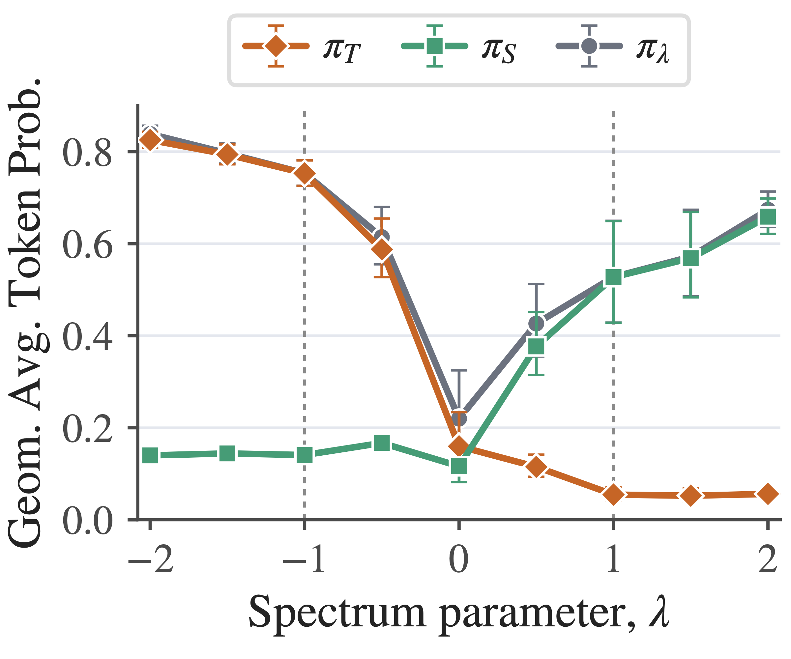
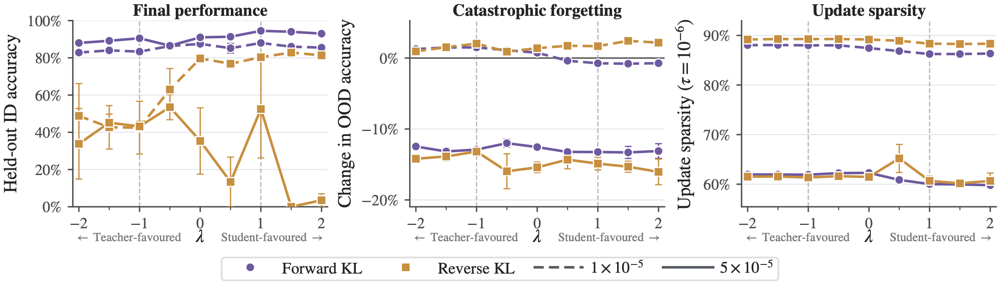
Forward KL is remarkably robust: held-out accuracy remains above 80% across the entire spectrum, varying by only 5.2 percentage points at learning rate \(1\times10^{-5}\). Reverse KL is substantially more sensitive and benefits strongly from student-favoured rollouts. Yet forgetting and update sparsity change little with \(\lambda\); both remain much more strongly influenced by learning rate.
Beyond Pass@1: Coverage and Generalisation
Pass@1 alone does not fully capture what a model has learned. We therefore examine output coverage under repeated sampling and transfer from Countdown-3 to the harder Countdown-4E task. The same trends hold across both model families.
Output coverage
Forward KL yields larger gains from repeated sampling.
At comparable pass@1, reverse KL yields smaller pass@10 gains. For student-favoured rollouts, both KL directions can have similar pass@1, but forward KL leads to significantly higher pass@10.
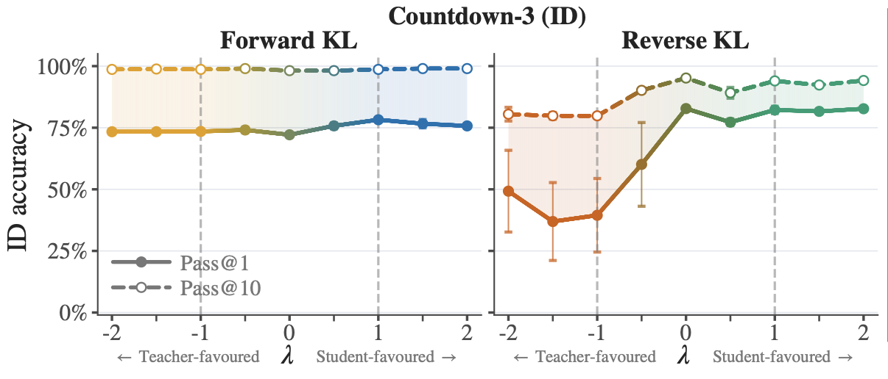
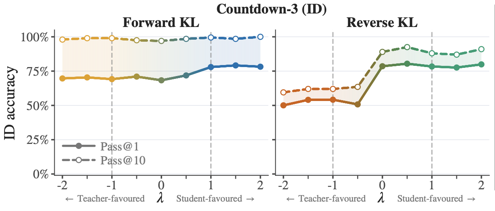
Harder-task generalisation
More on-policy rollouts generalise better.
Without further training, performance on Countdown-4E improves gradually across the spectrum. Under both KL directions, more on-policy rollouts consistently yield 10-15% higher pass@k than off-policy rollouts - the clearest regime in which on-policy data provides a significant advantage.
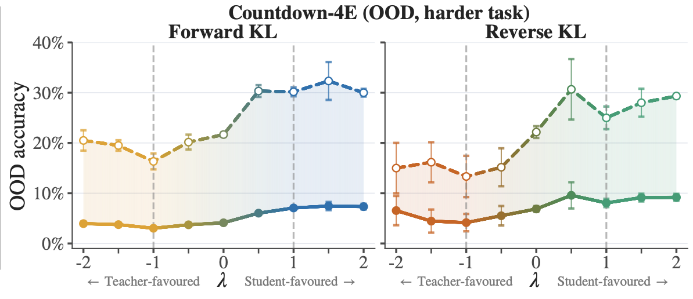
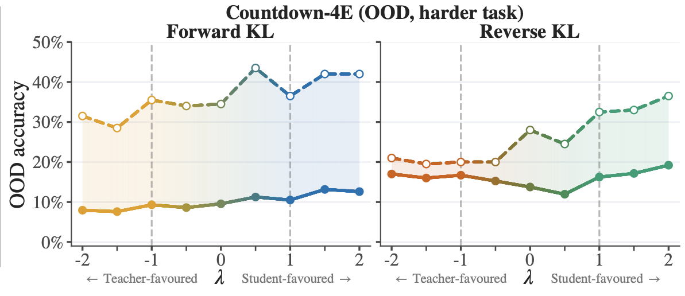
What Happens Next?
Subsequent RLVR is inconsistent.
We train the Countdown-3 distillation checkpoints on Countdown-4 for another 300 RLVR steps. Reverse-KL checkpoints at the lower learning rate improve quickly - including OffPD checkpoints with initially low accuracy - but later undergo reward collapse. Other off-policy checkpoints improve steadily and reach the highest performance at the end of training.
The initial generalisation advantage of on-policy checkpoints therefore does not translate into a reliable advantage after RLVR. The best initial checkpoint is not necessarily the best starting point for a multi-stage post-training pipeline.
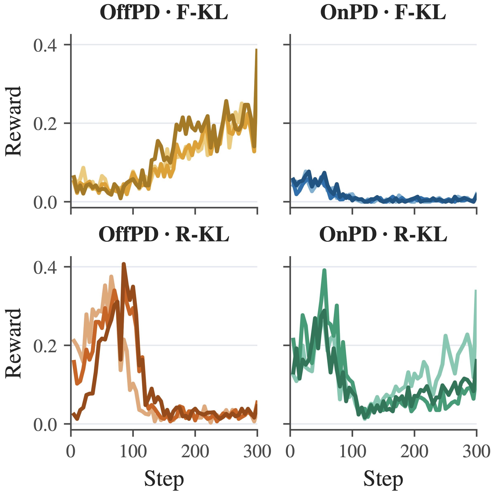
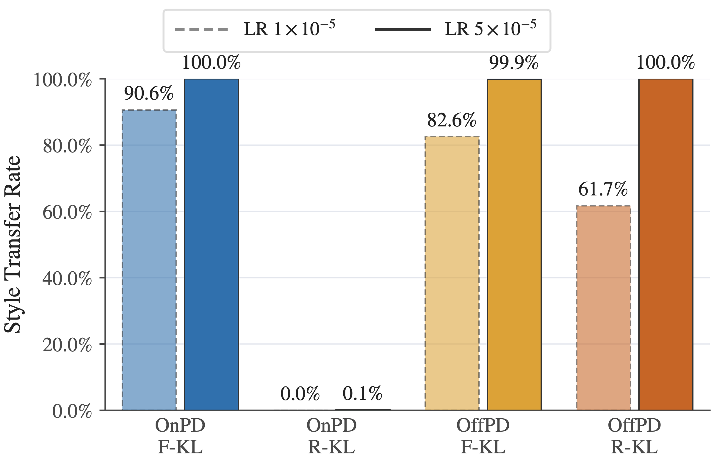
Rollout policy can affect teacher-style transfer.
We instruct the teacher to reason in Spanish and measure whether the student adopts this incidental behaviour. Surprisingly, OnPD with reverse KL largely preserves the student's English response style, whereas the other configurations exhibit near-complete transfer to Spanish.
On student-generated English prefixes, the teacher still supports English continuations. The mode-seeking reverse-KL objective can match this English mode without requiring the student to cover Spanish alternatives, suggesting that OnPD with reverse KL may help suppress incidental style transfer.
Do the Findings Survive Other Experimental Designs?
We test three choices that could plausibly explain the main results. The details and figures are available below; the qualitative picture remains largely unchanged.
Sampled rather than full-vocabulary KL Same pattern: forward KL stays robust; reverse KL stays brittle.
Several recent methods use a more memory-efficient sampled-KL estimator. We repeat the comparison while disentangling the policy used to generate the rollout from the distribution used to sample the token-level KL gradient. Forward KL remains robust to rollout policy, reverse KL remains substantially more sensitive, and learning rate continues to govern forgetting and update sparsity.
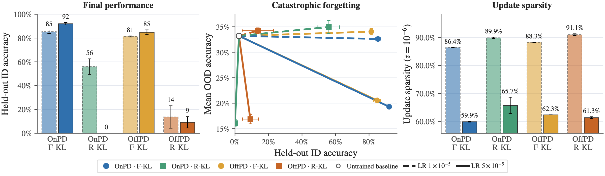
No gradient clipping Clipping stabilises reverse KL, but does not explain the limited rollout-policy effect.
Removing global gradient clipping exposes a stronger difference between KL directions but no consistent OnPD-OffPD gap. Reverse-KL performance deteriorates substantially, whereas forward KL remains effective at larger learning rates. Forgetting and sparsity remain primarily determined by learning rate.
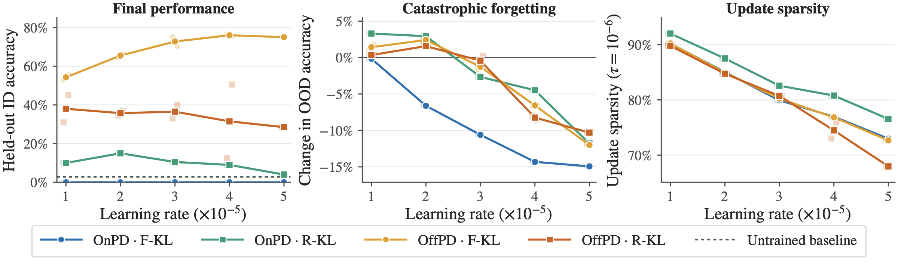
Longer reasoning rollouts A suggestive on-policy gain, with the broader pattern intact.
We repeat the comparison on Numina-MATH, where teacher responses average 622 tokens rather than 94-135. At the lower learning rate, OnPD with reverse KL attains the highest MATH-500 accuracy, suggesting that on-policy rollouts may help on harder tasks requiring longer reasoning. Forward KL remains more robust, while forgetting and sparsity remain governed by learning rate. Because this experiment contains one run per condition, we treat the on-policy advantage as suggestive.
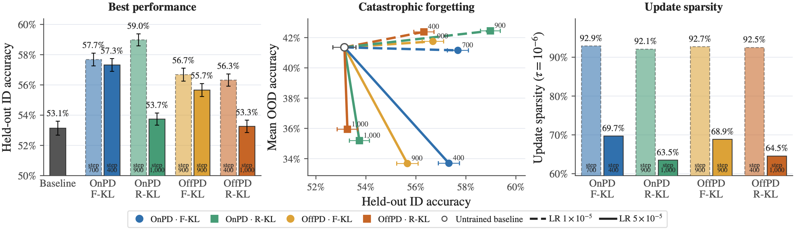
Conclusion
Our controlled comparison offers a nuanced view of on-policy and off-policy learning in distillation. On-policy data can improve generalisation to harder tasks and may reduce incidental teacher-style transfer, but learning rate and KL direction explain substantially more of the observed variation.
Given its lower computational cost, we encourage future work on on-policy distillation to include OffPD as a standard baseline. More broadly, it is difficult to attribute most observed differences between SFT and RL to rollout policy alone: the learning objective, reward signal, supervision density, and optimisation procedure all deserve closer study.